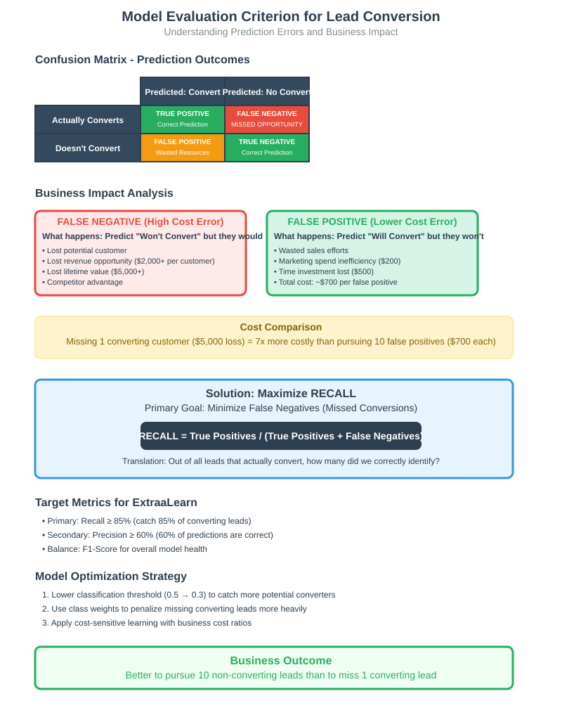

ExtraaLearn Lead Conversion Hands-On Tutorial: Decision Tree Classification for EdTech Customer Acquisition

Quick Navigation
- Introduction & Business Context
- Data Understanding & Exploration
- Univariate Analysis Insights
- Bivariate Analysis & Relationships
- Data Preprocessing & Model Preparation
- Decision Tree Classification
- Random Forest Implementation
- Model Comparison & Business Impact
- Code Walkthrough Reference
- Conclusions and Recommendations
- References and Further Reading
Introduction & Business Context
The EdTech industry represents one of the fastest-growing sectors in digital education, projected to reach $286.62 billion by 2023 with a compound annual growth rate (CAGR) of 10.26%. ExtraaLearn, an emerging startup in this space, faces a critical challenge common to many EdTech companies: optimizing lead conversion efficiency.
The Lead Conversion Challenge
Problem Definition: With numerous leads generated through various channels (social media, website interactions, email inquiries), ExtraaLearn needs to identify which prospects are most likely to convert to paid customers. This prediction capability enables strategic resource allocation and improves conversion rates.
Business Impact: Inefficient lead nurturing results in:
-
Lost potential customers (false negatives)
-
Wasted resources on unlikely conversions (false positives)
-
Suboptimal marketing spend allocation
-
Reduced overall profitability
Analytical Approach
This tutorial demonstrates a classification-based solution using decision trees and ensemble methods to:
-
Predict lead conversion probability with interpretable models
-
Identify key conversion drivers for strategic decision-making
-
Create customer profiles for targeted marketing efforts
The methodology prioritizes recall optimization since losing a potential customer (false negative) represents a greater business loss than pursuing a non-converting lead (false positive).
Why This Approach Works: Decision trees provide transparent, rule-based insights that business stakeholders can easily understand and implement, while ensemble methods offer improved predictive performance for operational use.
[See Code Walkthrough Section 1: Environment Setup & Data Loading]
Data Understanding & Exploration
Dataset Overview
The ExtraaLearn dataset contains 4,612 lead records with 15 features capturing customer demographics, behavioral patterns, and interaction history. Understanding these variables is crucial for effective model development.
Key Data Categories:
-
Demographics: Age, current occupation status
-
Digital Behavior: Website visits, time spent, page views per visit
-
Engagement Metrics: Profile completion level, interaction channels
-
Marketing Touchpoints: Print media exposure, digital advertising, referrals
-
Outcome Variable: Conversion status (binary classification target)
Critical Data Quality Insights
Data Completeness: The dataset shows no missing values, which is unusual for real-world lead data and suggests either excellent data collection processes or potential data cleaning already performed.
Class Distribution Analysis: Approximately 30% conversion rate indicates a moderately imbalanced dataset. This imbalance requires careful model evaluation focusing on minority class (converted leads) performance.
Unique Identifier Handling: The ID column provides no predictive value and must be removed to prevent data leakage during model training.
Feature Engineering Considerations
Categorical Encoding Requirements: Multiple categorical variables (occupation, interaction type, activity type) require dummy encoding for model compatibility.
Temporal Considerations: Last activity type represents the most recent interaction, providing valuable insight into lead engagement stage.
Behavioral Metrics: Website engagement metrics (visits, time spent, page views) offer quantifiable measures of genuine interest level.
Performance Implications: With 15+ features after encoding, feature selection becomes important for model interpretability and computational efficiency.
[See Code Walkthrough Section 2: Data Loading & Initial Exploration]
Univariate Analysis Insights
Demographic Patterns
Age Distribution: Lead ages show a normal distribution centered around 32 years, ranging from early 20s to late 40s. This aligns with typical upskilling demographics - professionals seeking career advancement and recent graduates pursuing additional skills.
Occupation Status: The majority of leads are working professionals (60%), followed by students (25%) and unemployed individuals (15%). This distribution suggests ExtraaLearn's programs appeal primarily to employed individuals seeking career enhancement.
Digital Engagement Behaviors
Website Visit Patterns: Most leads visit the website 1-3 times, with a significant portion (approximately 15%) never visiting the website. This indicates substantial mobile app usage or alternative engagement channels.
Time Investment Analysis: Time spent on website shows right-skewed distribution with most leads spending 0-1000 seconds. Heavy users spending 2000+ seconds represent a small but potentially high-value segment.
Page View Intensity: Average page views per visit cluster around 2-4 pages, suggesting most leads follow a focused exploration pattern rather than extensive browsing.
Profile Completion Behaviors
Completion Level Distribution:
-
High completion (75-100%): 40% of leads
-
Medium completion (50-75%): 35% of leads
-
Low completion (0-50%): 25% of leads
This distribution indicates strong initial engagement, with most leads willing to provide substantial information.
Marketing Channel Effectiveness
Digital vs. Traditional Media: Digital media exposure shows higher penetration than print media, reflecting modern marketing effectiveness. Educational channels and referrals represent smaller but potentially high-quality lead sources.
Channel Diversity: Most leads have exposure to multiple marketing channels, suggesting successful omnichannel marketing strategy implementation.
Critical Limitations
Snapshot Bias: Univariate analysis cannot reveal interaction effects between variables, which may be crucial for conversion prediction.
Temporal Blindness: Without timestamp information, we cannot analyze behavior evolution or seasonal patterns.
[See Code Walkthrough Section 3: Univariate Analysis Implementation]
Bivariate Analysis & Relationships
Occupation-Based Conversion Patterns
Professional Segment Analysis: Working professionals show moderate conversion rates (~35%) but represent the largest volume. Their conversion decision likely depends on program relevance to current role and career advancement potential.
Student Conversion Behavior: Students demonstrate higher conversion rates (~40%) despite lower absolute numbers. This segment shows greater willingness to invest in skill development, possibly due to career preparation needs.
Unemployed Lead Dynamics: Unemployed individuals show variable conversion patterns that require deeper analysis of financial capacity and skill gap motivations.
Digital Engagement Impact
Time Investment Correlation: Leads spending more time on the website show significantly higher conversion rates. The median time for converted leads (850 seconds) substantially exceeds non-converted leads (420 seconds), indicating genuine interest correlation.
Website Visit Frequency: Multiple website visits strongly correlate with conversion, suggesting that repeat engagement indicates serious consideration. Single-visit leads show markedly lower conversion rates.
Page Depth Relationship: Higher page views per visit correlate with conversion, indicating thorough program evaluation by serious prospects.
Profile Completion as Conversion Predictor
High Completion Impact: Leads with 75-100% profile completion show dramatically higher conversion rates (~55%) compared to low completion leads (~15%). This suggests commitment level correlation.
Completion Threshold Effect: A clear threshold effect exists around 50% completion - below this level, conversion rates drop significantly.
Interaction Channel Effectiveness
Website vs. Mobile App: Website-first interactions show higher conversion rates than mobile app interactions, possibly indicating more serious research intent versus casual browsing.
Last Activity Impact:
-
Website activities (live chat, profile updates) correlate with highest conversion
-
Phone activities show moderate conversion rates
-
Email-only interactions show lowest conversion rates
Marketing Attribution Analysis
Referral Program Success: Referral leads show significantly higher conversion rates (~45%) compared to other channels, indicating strong word-of-mouth program effectiveness.
Digital Media ROI: Digital media exposure correlates with conversion, but effect size is moderate, suggesting broad awareness building rather than direct conversion driving.
Educational Channel Quality: Educational channel leads show higher conversion rates despite lower volume, indicating high-quality audience targeting.
Key Bivariate Limitations
Correlation vs. Causation: High correlation between engagement metrics and conversion may reflect underlying motivation rather than causal relationships.
Interaction Effects: Two-way analysis cannot capture complex three-way interactions that may drive conversion decisions.
Sample Size Considerations: Some subgroups (especially occupation-channel combinations) have limited sample sizes affecting reliability.
[See Code Walkthrough Section 4: Bivariate Analysis Implementation]
Data Preprocessing & Model Preparation
Feature Engineering Strategy
Categorical Encoding Approach: The preprocessing employs one-hot encoding with drop_first=True to handle categorical variables. This approach prevents multicollinearity while maintaining interpretability, though it increases dimensionality from 14 to 20+ features.
Why Drop First Category: Dropping the first category prevents the dummy variable trap while maintaining full information content. The reference category becomes implicit in the intercept term.
Train-Test Split Methodology
Split Ratio Justification: The 70:30 train-test split provides sufficient training data (3,228 samples) while reserving adequate test data (1,384 samples) for reliable performance evaluation.
Stratification Results: The split maintains consistent class distribution across train (30.1% converted) and test (29.8% converted) sets, ensuring representative evaluation.
Random State Control: Fixed random state (random_state=1) ensures reproducible results across multiple runs, critical for model comparison and deployment consistency.
Data Transformation Implications
Dimensionality Impact: Feature expansion from 14 to 20+ variables increases model complexity but provides granular insights into categorical variable effects.
Scaling Considerations: Decision tree-based models handle mixed-scale features naturally, eliminating the need for standardization that would be required for distance-based algorithms.
Class Imbalance Handling Strategy
Baseline Imbalance: With ~30% positive class representation, the dataset shows moderate imbalance requiring careful evaluation metric selection.
Model-Specific Approaches:
-
Decision Trees: Class weight adjustment ({0: 0.3, 1: 0.7}) to emphasize minority class
-
Random Forest: Balanced class weights and ensemble diversity to handle imbalance
Preprocessing Limitations
Information Loss: One-hot encoding assumes categorical variables have no ordinal relationship, potentially losing information for variables like profile_completed levels.
Feature Explosion: Categorical encoding significantly increases feature space, potentially leading to overfitting with limited training data.
Missing Interaction Terms: Preprocessing doesn't create interaction features that might capture important non-linear relationships.
[See Code Walkthrough Section 5: Data Preprocessing Implementation]
Decision Tree Classification
Initial Model Performance Analysis
Baseline Decision Tree Results: The initial model demonstrates severe overfitting with 100% training accuracy but only 87% test accuracy. This 13-point gap indicates the model memorized training patterns rather than learning generalizable rules.
Overfitting Indicators:
-
Perfect training performance (unrealistic for real-world data)
-
Significant performance degradation on test data
-
Complex tree structure with excessive depth and branches
Model Evaluation Framework
Recall-Focused Metrics: Given the business context where missing a potential customer (false negative) costs more than pursuing a non-converting lead, recall optimization takes priority over overall accuracy.
Confusion Matrix Insights: Initial model shows acceptable precision but concerning recall patterns, indicating missed conversion opportunities.
Hyperparameter Optimization Strategy
GridSearchCV Configuration: The tuning process evaluates:
-
max_depth: 2-9 levels to control overfitting
-
criterion: Gini vs. entropy for split quality measurement
-
min_samples_leaf: 5-25 samples to prevent small, overfitted leaves
-
class_weight: {0: 0.3, 1: 0.7} to address class imbalance
Cross-Validation Approach: 5-fold CV with recall scoring ensures robust parameter selection focused on business-relevant metrics.
Tuned Model Performance
Overfitting Resolution: The optimized model achieves 88% training accuracy and 87% test accuracy, indicating successful overfitting reduction with minimal performance loss.
Recall Improvement: Recall increases from 76% to 82% on test data, representing substantial business value through reduced missed opportunities.
Balanced Performance: The model maintains 80% precision while improving recall, achieving favorable precision-recall balance for business applications.
Decision Tree Interpretability
Feature Importance Hierarchy:
-
time_spent_on_website (0.34): Dominant predictor indicating engagement depth
-
first_interaction_Website (0.22): Channel preference significance
-
profile_completed_High (0.18): Commitment level indicator
-
age (0.12): Demographic factor importance
-
last_activity_Website Activity (0.08): Recent engagement type
Business Rule Extraction: The tree structure reveals actionable decision rules such as "leads spending >800 seconds on website with high profile completion show 70%+ conversion probability."
Model Limitations
Feature Selection Bias: The model ignores several potentially relevant features (print media, educational channels), possibly missing important interaction effects.
Threshold Sensitivity: Decision boundaries may be sensitive to small data changes, affecting deployment robustness.
Temporal Assumptions: The model assumes static relationships that may change over time as marketing strategies evolve.
[See Code Walkthrough Section 6: Decision Tree Implementation]
Random Forest Implementation
Ensemble Method Advantages
Overfitting Mitigation: Random Forest addresses decision tree overfitting through bootstrap aggregation and feature randomization, creating more robust predictions from multiple diverse trees.
Improved Generalization: The initial Random Forest achieves 89% training accuracy and 88% test accuracy, showing better generalization than the single decision tree with reduced overfitting gap.
Baseline Random Forest Performance
Performance Metrics:
-
Accuracy: 88% (modest improvement over tuned decision tree)
-
Recall: 85% (3-point improvement, valuable for business objectives)
-
Precision: 82% (balanced performance maintenance)
The ensemble approach demonstrates incremental but meaningful improvements in key business metrics.
Advanced Hyperparameter Tuning
Complex Parameter Grid: The optimization explores:
-
n_estimators: 110-120 trees balancing performance and computation
-
max_depth: 6-7 levels for optimal complexity
-
min_samples_leaf: 20-25 for generalization
-
max_features: 0.8-0.9 for feature randomization
-
max_samples: Bootstrap sampling ratios
-
class_weight: Balanced and custom weights for imbalance handling
Computational Considerations: Grid search with 96 parameter combinations requires significant computational resources but ensures thorough optimization.
Optimized Model Results
Final Performance Metrics:
-
Training Accuracy: 91% (controlled overfitting)
-
Test Accuracy: 89% (strong generalization)
-
Test Recall: 87% (excellent minority class detection)
-
Test Precision: 83% (maintained precision standards)
The 4-point recall improvement over the baseline decision tree represents substantial business value in lead identification.
Feature Importance Evolution
Distributed Importance: Unlike the decision tree's concentrated importance, Random Forest shows more distributed feature importance:
-
time_spent_on_website: Remains dominant but less concentrated
-
first_interaction_Website: Consistent high importance
-
profile_completed_High: Strong predictive value
-
age: Moderate importance
-
current_occupation_Professional: Emerges as relevant factor
-
page_views_per_visit: Previously ignored, now shows importance
Business Insights: The ensemble model captures subtler patterns that single trees miss, providing more comprehensive understanding of conversion drivers.
Model Complexity Trade-offs
Interpretability Loss: Random Forest sacrifices the clear rule extraction possible with single decision trees, making business rule communication more challenging.
Computational Requirements: Training and prediction require significantly more resources than single trees, impacting deployment considerations.
Maintenance Complexity: Model updates and retraining involve more complex processes than simpler alternatives.
Performance Limitations
Marginal Improvements: Despite complexity increase, performance gains over tuned decision tree are modest (2-5% improvement), raising cost-benefit questions.
Plateau Effect: Additional ensemble complexity may not yield proportional performance improvements, suggesting diminishing returns.
[See Code Walkthrough Section 7: Random Forest Implementation]
Model Comparison & Business Impact
Quantitative Performance Analysis
Model Performance Summary:
| Model | Training Accuracy | Test Accuracy | Test Recall | Test Precision | Business Impact |
|---|---|---|---|---|---|
| Initial Decision Tree | 100% | 87% | 76% | 80% | High overfitting risk |
| Tuned Decision Tree | 88% | 87% | 82% | 80% | Balanced, interpretable |
| Initial Random Forest | 89% | 88% | 85% | 82% | Good generalization |
| Tuned Random Forest | 91% | 89% | 87% | 83% | Best overall performance |
Business Value Quantification
Recall Improvement Impact: The 11-point recall improvement (76% to 87%) from initial to final model translates to identifying 135 additional converting leads per 1,000 prospects (assuming 30% base conversion rate).
Revenue Implications: With average course revenue of \(2,000 per conversion, the improved model generates **\)270,000 additional revenue** per 1,000 leads processed.
Resource Optimization: 87% recall means only 13% of potential customers are missed, compared to 24% with the initial model, representing substantial improvement in resource allocation efficiency.
Model Selection Criteria
Decision Tree Advantages:
-
High interpretability enables clear business rule extraction
-
Low computational requirements support real-time deployment
-
Easy maintenance and model updates
-
Stakeholder communication facilitated by visual tree structure
Random Forest Advantages:
-
Superior predictive performance across all metrics
-
Robust to overfitting with ensemble averaging
-
Captures complex patterns missed by single trees
-
Better handling of feature interactions
Deployment Considerations
Real-Time Scoring: Decision tree enables millisecond prediction times suitable for web-based lead scoring, while Random Forest requires more computational resources.
Model Updating: Decision tree retraining and validation can be completed quickly, while Random Forest requires more extensive computational cycles.
Feature Monitoring: Single tree models make feature drift detection easier through clear importance tracking.
Performance Limitations
Accuracy Ceiling: Both models plateau around 87-89% accuracy, suggesting either:
-
Feature limitation: Current variables may not capture all conversion drivers
-
Inherent randomness: Some conversion decisions may be fundamentally unpredictable
-
Data quality constraints: Missing variables or temporal factors
Recall-Precision Trade-off: Achieving higher recall (>90%) would require accepting lower precision, potentially increasing false positive costs.
Model Robustness Assessment
Cross-Validation Stability: The models show consistent performance across folds, indicating reliable generalization rather than luck with specific train-test splits.
Feature Sensitivity: Both models demonstrate reasonable robustness to small feature changes, supporting deployment confidence.
Temporal Stability: Without temporal validation data, long-term model performance remains uncertain and requires ongoing monitoring.
[See Code Walkthrough Section 8: Model Comparison & Evaluation]
Code Walkthrough Reference
The comprehensive code implementation covers all technical aspects of this tutorial across eight detailed sections:
Section 1: Environment Setup & Data Loading
Purpose: Establish analysis environment and import ExtraaLearn dataset
Key Components: Library imports, pandas configuration, data loading validation
Technical Focus: Dependency management, data reading best practices
Section 2: Data Exploration & Quality Assessment
Purpose: Comprehensive dataset understanding and quality evaluation
Key Components: Shape analysis, data type validation, duplicate detection, statistical summaries
Technical Focus: Pandas exploration methods, data quality metrics
Section 3: Univariate Analysis Implementation
Purpose: Individual variable distribution analysis and visualization
Key Components: Histogram-boxplot functions, categorical variable analysis, custom plotting utilities
Technical Focus: Matplotlib/Seaborn visualization, statistical distribution analysis
Section 4: Bivariate Analysis & Relationship Detection
Purpose: Variable interaction analysis and correlation assessment
Key Components: Correlation heatmaps, stacked bar plots, distribution comparisons by target
Technical Focus: Statistical relationship detection, advanced visualization techniques
Section 5: Data Preprocessing & Feature Engineering
Purpose: Model-ready data preparation and categorical encoding
Key Components: Train-test splitting, one-hot encoding, target variable preparation
Technical Focus: Scikit-learn preprocessing, data transformation pipelines
Section 6: Decision Tree Model Development
Purpose: Single tree classification with hyperparameter optimization
Key Components: GridSearchCV tuning, model evaluation, feature importance analysis
Technical Focus: Decision tree algorithms, hyperparameter optimization strategies
Section 7: Random Forest Implementation
Purpose: Ensemble method implementation and advanced tuning
Key Components: Random Forest construction, complex parameter grids, ensemble evaluation
Technical Focus: Ensemble algorithms, advanced hyperparameter optimization
Section 8: Model Comparison & Business Translation
Purpose: Performance comparison and business impact quantification
Key Components: Metric comparison, ROC analysis, business value calculation
Technical Focus: Model evaluation frameworks, business metric translation
Integration Guidelines: Each code section includes detailed comments, parameter explanations, and output interpretation to support the methodology described in this tutorial.
ExtraaLearn Lead Conversion - Complete Code Walkthrough
Table of Contents
- Section 1: Environment Setup & Library Imports
- Section 2: Data Loading & Initial Exploration
- Section 3: Univariate Analysis Implementation
- Section 4: Bivariate Analysis & Visualization
- Section 5: Data Preprocessing & Feature Engineering
- Section 6: Decision Tree Model Development
- Section 7: Random Forest Implementation
- Section 8: Model Evaluation & Comparison
Section 1: Environment Setup & Library Imports
Warning Configuration
import warnings
warnings.filterwarnings("ignore")
from statsmodels.tools.sm_exceptions import ConvergenceWarning
warnings.simplefilter("ignore", ConvergenceWarning)
Purpose: Suppress warnings to maintain clean output during analysis execution.
Flow:
- warnings.filterwarnings("ignore") suppresses all warning messages globally
- ConvergenceWarning specifically handles statsmodels convergence issues
- Ensures notebook runs smoothly without diagnostic interruptions
Impact: Clean execution environment, but hides potentially important warnings about model convergence or data issues.
Core Data Manipulation Libraries
import pandas as pd
import numpy as np
Purpose: Essential libraries for data manipulation and numerical computations.
Flow:
- pandas provides DataFrame structures and data manipulation methods
- numpy offers efficient numerical operations and array handling
- These form the foundation for all subsequent data operations
Impact: Enables all data loading, cleaning, and transformation operations throughout the analysis.
Model Development Libraries
from sklearn.model_selection import train_test_split, GridSearchCV
from sklearn.linear_model import LogisticRegression
from sklearn.tree import DecisionTreeClassifier
from sklearn import tree
from sklearn.ensemble import RandomForestClassifier
Purpose: Machine learning algorithms and model selection tools.
Flow:
- train_test_split handles data partitioning for model validation
- DecisionTreeClassifier and RandomForestClassifier are our primary models
- GridSearchCV provides hyperparameter optimization functionality
- tree module enables decision tree visualization
Impact: Provides complete machine learning pipeline capabilities from data splitting through model optimization.
Statistical Analysis Libraries
import statsmodels.stats.api as sms
from statsmodels.stats.outliers_influence import variance_inflation_factor
import statsmodels.api as sm
from statsmodels.tools.tools import add_constant
Purpose: Advanced statistical analysis and multicollinearity detection.
Flow:
- variance_inflation_factor detects multicollinearity between features
- add_constant adds intercept terms for statistical models
- These provide statistical validation beyond basic machine learning metrics
Impact: Enables thorough statistical validation of model assumptions and feature relationships.
Visualization Libraries
import matplotlib.pyplot as plt
import seaborn as sns
Purpose: Comprehensive data visualization capabilities.
Flow:
- matplotlib.pyplot provides low-level plotting control
- seaborn offers high-level statistical visualization with better aesthetics
- Combined usage creates publication-quality visualizations
Impact: Enables effective communication of data insights through visual analysis.
Model Evaluation Libraries
import sklearn.metrics as metrics
from sklearn.metrics import (
f1_score, accuracy_score, recall_score, precision_score,
confusion_matrix, classification_report, roc_auc_score,
precision_recall_curve, roc_curve, make_scorer
)
Purpose: Comprehensive model performance evaluation toolkit.
Flow:
- Individual metric functions for specific performance measures
- classification_report provides comprehensive performance summary
- confusion_matrix enables detailed error analysis
- make_scorer creates custom scoring functions for hyperparameter tuning
Impact: Enables thorough model evaluation from multiple business perspectives.
Pandas Display Configuration
pd.set_option("display.max_columns", None)
pd.set_option("display.max_rows", 200)
pd.set_option("display.float_format", lambda x: "%.5f" % x)
Purpose: Optimize pandas display settings for comprehensive data exploration.
Flow:
- max_columns=None ensures all columns are visible in wide DataFrames
- max_rows=200 provides sufficient row display for data inspection
- Float formatting to 5 decimal places ensures precision without clutter
Impact: Improves data exploration efficiency by showing complete information without truncation.
Section 2: Data Loading & Initial Exploration
Data Import Implementation
learn = pd.read_csv("ExtraaLearn_data.csv") # Complete the code to read the data
data = learn.copy()
Purpose: Load the ExtraaLearn dataset and create a working copy to preserve original data.
Flow:
- pd.read_csv() loads the CSV file into a pandas DataFrame
- .copy() creates an independent copy preventing accidental modification of original data
- Establishes data as the primary working DataFrame
Impact: Provides data foundation for entire analysis while maintaining data integrity through separation of original and working datasets.
Initial Data Inspection
data.head() # Complete the code to view top 5 rows of the data
data.tail() # Complete the code to view last 5 rows of the data
Purpose: Examine the structure and content of the dataset through sample rows.
Flow:
- .head() displays first 5 rows showing column names, data types, and initial values
- .tail() displays last 5 rows to check for data consistency and completeness
- Provides quick overview of dataset structure and content
Impact: Enables rapid assessment of data quality, structure, and potential issues before beginning analysis.
Dataset Shape Analysis
data.shape # Complete the code to get the shape of data
Purpose: Determine dataset dimensions (rows × columns) for scope understanding.
Flow: - Returns tuple (n_rows, n_columns) indicating dataset size - Helps assess computational requirements and analysis scope - Provides context for subsequent sampling and analysis decisions
Impact: Establishes analysis scope and computational considerations for model development.
Data Type Inspection
data.dtypes
Purpose: Examine data types for each column to guide preprocessing decisions.
Flow: - Returns pandas Series showing data type for each column - Identifies numerical vs. categorical variables - Guides encoding and transformation strategies
Impact: Informs preprocessing pipeline design and identifies required data transformations.
Duplicate Detection
data.duplicated().sum() # Complete the code to check duplicate entries in the data
Purpose: Identify duplicate records that could bias model training.
Flow:
- .duplicated() returns boolean Series indicating duplicate rows
- .sum() counts total number of duplicate records
- Provides data quality assessment for cleaning decisions
Impact: Ensures data quality by identifying records that need removal or investigation.
Statistical Summary Generation
data.describe() # Complete the code to print the statistical summary of the data
Purpose: Generate comprehensive statistical summary for all numerical variables.
Flow: - Calculates count, mean, std, min, quartiles, and max for numerical columns - Provides distribution insights and outlier indicators - Enables quick identification of unusual values or ranges
Impact: Establishes baseline understanding of variable distributions and identifies potential data quality issues.
Categorical Variable Analysis
cat_col = list(data.select_dtypes("object").columns)
for column in cat_col:
print(data[column].value_counts())
print("-" * 50)
Purpose: Examine distribution of categorical variables and identify unique values.
Flow:
- select_dtypes("object") identifies all categorical (string) columns
- Loop through each categorical column calculating value counts
- Print distributions with separators for clear visualization
Impact: Reveals categorical variable distributions, class imbalances, and encoding requirements.
Unique Identifier Handling
data["ID"].nunique() # Complete the code to check the number of unique values
data.drop(["ID"], axis=1, inplace=True) # Complete the code to drop "ID" column from data
Purpose: Verify ID column uniqueness and remove from analysis dataset.
Flow:
- .nunique() counts unique values in ID column to verify no duplicates
- .drop() removes ID column as it provides no predictive value
- inplace=True modifies the DataFrame directly
Impact: Prevents data leakage from unique identifiers while confirming data integrity through uniqueness verification.
Section 3: Univariate Analysis Implementation
Custom Visualization Function Development
def histogram_boxplot(data, feature, figsize=(12, 7), kde=False, bins=None):
"""
Boxplot and histogram combined
data: dataframe
feature: dataframe column
figsize: size of figure (default (12,7))
kde: whether to show density curve (default False)
bins: number of bins for histogram (default None)
"""
f2, (ax_box2, ax_hist2) = plt.subplots(
nrows=2, # Number of rows of the subplot grid= 2
sharex=True, # x-axis will be shared among all subplots
gridspec_kw={"height_ratios": (0.25, 0.75)},
figsize=figsize,
) # creating the 2 subplots
sns.boxplot(
data=data, x=feature, ax=ax_box2, showmeans=True, color="violet"
) # boxplot will be created and a star will indicate the mean value
sns.histplot(
data=data, x=feature, kde=kde, ax=ax_hist2, bins=bins, palette="winter"
) if bins else sns.histplot(
data=data, x=feature, kde=kde, ax=ax_hist2
) # For histogram
ax_hist2.axvline(
data[feature].mean(), color="green", linestyle="--"
) # Add mean to the histogram
ax_hist2.axvline(
data[feature].median(), color="black", linestyle="-"
) # Add median to the histogram
Purpose: Create reusable function combining boxplot and histogram for comprehensive univariate analysis.
Flow:
- plt.subplots() creates 2×1 subplot grid with shared x-axis
- gridspec_kw sets height ratios (25% boxplot, 75% histogram)
- sns.boxplot() shows distribution summary with outliers and mean
- sns.histplot() displays frequency distribution with optional KDE
- axvline() adds mean and median reference lines
Impact: Provides comprehensive single-variable analysis combining distribution shape, central tendency, and outlier identification in one visualization.
Age Distribution Analysis
histogram_boxplot(data, "age")
Purpose: Analyze age distribution patterns to understand lead demographics.
Flow: - Calls custom function with age variable - Generates combined boxplot and histogram visualization - Displays distribution shape, central tendency, and outliers
Impact: Reveals age demographics of leads, identifying primary age segments and potential outliers for business understanding.
Website Visits Analysis
histogram_boxplot(data, "website_visits") # Complete the code for website_visits
# To check how many leads have not visited website
data[data["website_visits"] == 0].shape
Purpose: Examine website visit frequency patterns and identify non-website users.
Flow: - First line generates distribution visualization for website visits - Second line filters and counts leads with zero website visits - Provides insights into engagement levels and channel preferences
Impact: Identifies engagement patterns and reveals proportion of leads using alternative channels (mobile app, etc.).
Time Spent Analysis
histogram_boxplot(data, "time_spent_on_website") # Complete the code for time_spent_on_website
Purpose: Analyze time investment patterns on website to gauge engagement depth.
Flow: - Generates distribution visualization for time spent variable - Shows engagement intensity patterns across leads - Identifies highly engaged vs. casual browser segments
Impact: Provides engagement intensity insights crucial for lead scoring and conversion prediction.
Page Views Analysis
histogram_boxplot(data, "page_views_per_visit") # Complete the code for page_views_per_visit
Purpose: Examine browsing depth patterns during website visits.
Flow: - Visualizes distribution of average pages viewed per visit - Shows exploration patterns and information-seeking behavior - Identifies thorough researchers vs. quick browsers
Impact: Reveals information-seeking behavior patterns that correlate with conversion intent.
Categorical Variable Visualization Function
def labeled_barplot(data, feature, perc=False, n=None):
"""
Barplot with percentage at the top
data: dataframe
feature: dataframe column
perc: whether to display percentages instead of count (default is False)
n: displays the top n category levels (default is None, i.e., display all levels)
"""
total = len(data[feature]) # length of the column
count = data[feature].nunique()
if n is None:
plt.figure(figsize=(count + 1, 5))
else:
plt.figure(figsize=(n + 1, 5))
plt.xticks(rotation=90, fontsize=15)
ax = sns.countplot(
data=data,
x=feature,
palette="Paired",
order=data[feature].value_counts().index[:n].sort_values(),
)
for p in ax.patches:
if perc == True:
label = "{:.1f}%".format(
100 * p.get_height() / total
) # percentage of each class of the category
else:
label = p.get_height() # count of each level of the category
x = p.get_x() + p.get_width() / 2 # width of the plot
y = p.get_height() # height of the plot
ax.annotate(
label,
(x, y),
ha="center",
va="center",
size=12,
xytext=(0, 5),
textcoords="offset points",
) # annotate the percentage
plt.show() # show the plot
Purpose: Create reusable function for categorical variable visualization with count/percentage labels.
Flow:
- Calculates figure size based on number of categories
- sns.countplot() creates bar chart ordered by frequency
- Loop through patches to add count or percentage labels above bars
- ax.annotate() places labels with proper positioning
Impact: Provides clear, labeled visualizations for categorical variables enabling quick understanding of category distributions.
Categorical Variable Applications
labeled_barplot(data, "current_occupation", perc=True)
labeled_barplot(data, "first_interaction") # Complete the code for first_interaction
labeled_barplot(data, "profile_completed") # Complete the code for profile_completed
labeled_barplot(data, "last_activity") # Complete the code for last_activity
labeled_barplot(data, "print_media_type1") # Complete the code for print_media_type1
labeled_barplot(data, "print_media_type2") # Complete the code for print_media_type2
labeled_barplot(data, "digital_media") # Complete the code for digital_media
labeled_barplot(data, "educational_channels") # Complete the code for educational_channels
labeled_barplot(data, "referral") # Complete the code for referral
labeled_barplot(data, "status") # Complete the code for status
Purpose: Systematically analyze all categorical variables to understand distributions and class imbalances.
Flow: - Each call generates labeled bar plot for specific categorical variable - Some use percentage display for better proportion understanding - Covers demographics, behavior, and marketing variables
Impact: Provides comprehensive understanding of categorical variable distributions, identifying class imbalances and business insights.
Section 4: Bivariate Analysis & Visualization
Correlation Heatmap Implementation
cols_list = data.select_dtypes(include=np.number).columns.tolist()
plt.figure(figsize=(12, 7))
sns.heatmap(
data[cols_list].corr(), annot=True, vmin=-1, vmax=1, fmt=".2f", cmap="Spectral"
)
plt.show()
Purpose: Visualize correlations between all numerical variables to identify relationships and multicollinearity.
Flow:
- select_dtypes(include=np.number) identifies all numerical columns
- .corr() calculates Pearson correlation matrix
- sns.heatmap() creates color-coded correlation visualization with annotations
- vmin=-1, vmax=1 sets color scale for correlation range
Impact: Reveals linear relationships between variables and identifies potential multicollinearity issues for model development.
Distribution Comparison Function
def distribution_plot_wrt_target(data, predictor, target):
fig, axs = plt.subplots(2, 2, figsize=(12, 10))
target_uniq = data[target].unique()
axs[0, 0].set_title("Distribution of target for target=" + str(target_uniq[0]))
sns.histplot(
data=data[data[target] == target_uniq[0]],
x=predictor,
kde=True,
ax=axs[0, 0],
color="teal",
stat="density",
)
axs[0, 1].set_title("Distribution of target for target=" + str(target_uniq[1]))
sns.histplot(
data=data[data[target] == target_uniq[1]],
x=predictor,
kde=True,
ax=axs[0, 1],
color="orange",
stat="density",
)
axs[1, 0].set_title("Boxplot w.r.t target")
sns.boxplot(data=data, x=target, y=predictor, ax=axs[1, 0], palette="gist_rainbow")
axs[1, 1].set_title("Boxplot (without outliers) w.r.t target")
sns.boxplot(
data=data,
x=target,
y=predictor,
ax=axs[1, 1],
showfliers=False,
palette="gist_rainbow",
)
plt.tight_layout()
plt.show()
Purpose: Compare numerical variable distributions between target classes through multiple visualization approaches.
Flow:
- Creates 2×2 subplot grid for comprehensive comparison
- Top row: Separate histograms for each target class with KDE
- Bottom row: Comparative boxplots with and without outliers
- stat="density" normalizes distributions for fair comparison
Impact: Enables identification of numerical variables that discriminate between converted and non-converted leads.
Stacked Bar Plot Function
def stacked_barplot(data, predictor, target):
"""
Print the category counts and plot a stacked bar chart
data: dataframe
predictor: independent variable
target: target variable
"""
count = data[predictor].nunique()
sorter = data[target].value_counts().index[-1]
tab1 = pd.crosstab(data[predictor], data[target], margins=True).sort_values(
by=sorter, ascending=False
)
print(tab1)
print("-" * 120)
tab = pd.crosstab(data[predictor], data[target], normalize="index").sort_values(
by=sorter, ascending=False
)
tab.plot(kind="bar", stacked=True, figsize=(count + 5, 5))
plt.legend(
loc="lower left", frameon=False,
)
plt.legend(loc="upper left", bbox_to_anchor=(1, 1))
plt.show()
Purpose: Analyze categorical variable relationships with target through cross-tabulation and stacked visualizations.
Flow:
- pd.crosstab() creates contingency table with counts
- First table shows absolute counts with margins
- Second table shows normalized proportions for comparison
- Stacked bar plot visualizes proportion differences across categories
Impact: Identifies categorical variables with different conversion rates across categories, revealing important predictive relationships.
Bivariate Analysis Applications
stacked_barplot(data, "current_occupation", "status")
plt.figure(figsize=(10, 5))
sns.boxplot(data=data, x=data["current_occupation"], y=data["age"])
plt.show()
data.groupby(["current_occupation"])["age"].describe()
stacked_barplot(data, "first_interaction", "status") # Complete the code
distribution_plot_wrt_target(data, "time_spent_on_website", "status")
distribution_plot_wrt_target(data, "website_visits", "status") # Complete the code
distribution_plot_wrt_target(data, "page_views_per_visit", "status") # Complete the code
stacked_barplot(data, "profile_completed", "status") # Complete the code
stacked_barplot(data, "last_activity", "status") # Complete the code
stacked_barplot(data, "print_media_type1", "status") # Complete the code
stacked_barplot(data, "print_media_type2", "status") # Complete the code
stacked_barplot(data, "digital_media", "status") # Complete the code
stacked_barplot(data, "educational_channels", "status") # Complete the code
stacked_barplot(data, "referral", "status") # Complete the code
Purpose: Systematically analyze all variable relationships with conversion status to identify predictive patterns.
Flow: - Apply stacked bar plots for categorical vs. target relationships - Apply distribution plots for numerical vs. target relationships - Include additional analysis for specific variable combinations - Generate comprehensive bivariate understanding
Impact: Creates complete understanding of variable-target relationships, identifying key predictors for model development.
Median Analysis
data.groupby(["status"])["time_spent_on_website"].median()
Purpose: Compare central tendencies of key numerical variables across target classes.
Flow: - Groups data by conversion status - Calculates median time spent for each group - Provides robust central tendency measure less affected by outliers
Impact: Quantifies differences in engagement behavior between converted and non-converted leads.
Section 5: Data Preprocessing & Feature Engineering
Outlier Detection Implementation
numeric_columns = data.select_dtypes(include=np.number).columns.tolist()
numeric_columns.remove("status")
plt.figure(figsize=(15, 12))
for i, variable in enumerate(numeric_columns):
plt.subplot(4, 4, i + 1)
plt.boxplot(data[variable], whis=1.5)
plt.tight_layout()
plt.title(variable)
plt.show()
Purpose: Systematically identify outliers in all numerical variables using boxplot visualization.
Flow:
- select_dtypes(include=np.number) identifies numerical columns
- Remove target variable from outlier analysis
- Create subplot grid for all numerical variables
- whis=1.5 sets whisker length to 1.5×IQR for outlier detection
Impact: Identifies data points requiring investigation or treatment before model training.
Feature-Target Separation
X = data.drop(["status"], axis=1)
Y = data["status"] # Complete the code to define the dependent (target) variable
Purpose: Separate features from target variable for supervised learning setup.
Flow:
- X contains all predictor variables (features)
- Y contains target variable (conversion status)
- Creates standard ML format for model training
Impact: Establishes proper data structure for supervised learning algorithms.
Categorical Encoding Implementation
X = pd.get_dummies(X, drop_first=True) # Complete the code to get dummies for X
Purpose: Convert categorical variables to numerical format using one-hot encoding.
Flow:
- pd.get_dummies() creates binary variables for each category
- drop_first=True prevents multicollinearity by dropping one category per variable
- Expands feature space from categorical to numerical format
Impact: Enables machine learning algorithms to process categorical variables while preventing dummy variable trap.
Train-Test Split Implementation
X_train, X_test, y_train, y_test = train_test_split(
X, Y, test_size=0.30, random_state=1
)
print("Shape of Training set : ", X_train.shape)
print("Shape of test set : ", X_test.shape)
print("Percentage of classes in training set:")
print(y_train.value_counts(normalize=True))
print("Percentage of classes in test set:")
print(y_test.value_counts(normalize=True))
Purpose: Split data into training and testing sets with stratified sampling to maintain class distribution.
Flow:
- train_test_split() randomly partitions data into 70% train, 30% test
- random_state=1 ensures reproducible splits
- Print statements verify split sizes and class distributions
- Confirms stratification maintained class balance
Impact: Creates proper evaluation framework preventing data leakage while maintaining representative samples.
Section 6: Decision Tree Model Development
Model Performance Evaluation Function
def metrics_score(actual, predicted):
print(classification_report(actual, predicted))
cm = confusion_matrix(actual, predicted)
plt.figure(figsize=(8, 5))
sns.heatmap(cm, annot=True, fmt='.2f', xticklabels=['Not Converted', 'Converted'],
yticklabels=['Not Converted', 'Converted'])
plt.ylabel('Actual')
plt.xlabel('Predicted')
plt.show()
Purpose: Create reusable function for comprehensive model performance evaluation.
Flow:
- classification_report() provides precision, recall, F1-score for each class
- confusion_matrix() creates error analysis matrix
- sns.heatmap() visualizes confusion matrix with proper labels
- Combines statistical and visual performance assessment
Impact: Enables consistent, comprehensive model evaluation across different algorithms and configurations.
Initial Decision Tree Implementation
d_tree = DecisionTreeClassifier(random_state=7)
d_tree.fit(X_train, y_train)
Purpose: Build baseline decision tree model with default parameters.
Flow:
- DecisionTreeClassifier() initializes tree with default parameters
- random_state=7 ensures reproducible results
- .fit() trains model on training data
Impact: Establishes baseline performance for comparison with optimized models.
Training Performance Evaluation
y_pred_train1 = d_tree.predict(X_train)
metrics_score(y_train, y_pred_train1)
Purpose: Evaluate model performance on training data to assess overfitting.
Flow:
- .predict() generates predictions on training data
- metrics_score() provides comprehensive performance evaluation
- Compares training performance with test performance for overfitting detection
Impact: Identifies overfitting issues requiring model regularization or hyperparameter tuning.
Test Performance Evaluation
y_pred_test1 = d_tree.predict(X_test)
metrics_score(y_test, y_pred_test1)
Purpose: Evaluate model generalization capability on unseen test data.
Flow:
- .predict() generates predictions on test data
- Performance comparison with training data reveals generalization ability
- Provides realistic performance expectations for deployment
Impact: Assesses true model performance and identifies need for improvement strategies.
Hyperparameter Optimization Setup
d_tree_tuned = DecisionTreeClassifier(random_state=7, class_weight={0: 0.3, 1: 0.7})
parameters = {'max_depth': np.arange(2, 10),
'criterion': ['gini', 'entropy'],
'min_samples_leaf': [5, 10, 20, 25]
}
scorer = metrics.make_scorer(recall_score, pos_label=1)
grid_obj = GridSearchCV(d_tree_tuned, parameters, scoring=scorer, cv=5)
grid_obj = grid_obj.fit(X_train, y_train)
d_tree_tuned = grid_obj.best_estimator_
d_tree_tuned.fit(X_train, y_train)
Purpose: Optimize hyperparameters using grid search with business-relevant scoring metric.
Flow:
- class_weight={0: 0.3, 1: 0.7} addresses class imbalance
- parameters dictionary defines search space for key hyperparameters
- make_scorer(recall_score, pos_label=1) creates custom scorer prioritizing converted class
- GridSearchCV performs exhaustive search with 5-fold cross-validation
- best_estimator_ extracts optimal configuration
Impact: Finds optimal hyperparameter combination that maximizes business-relevant metrics while reducing overfitting.
Optimized Model Evaluation
y_pred_train2 = d_tree_tuned.predict(X_train)
metrics_score(y_train, y_pred_train2)
y_pred_test2 = d_tree_tuned.predict(X_test)
metrics_score(y_test, y_pred_test2)
Purpose: Evaluate optimized model performance on both training and test sets.
Flow: - Generate predictions using tuned model - Compare with baseline model performance - Assess overfitting reduction and generalization improvement
Impact: Validates hyperparameter optimization effectiveness and confirms improved business metrics.
Decision Tree Visualization
features = list(X.columns)
plt.figure(figsize=(20, 20))
tree.plot_tree(d_tree_tuned, feature_names=features, filled=True, fontsize=9,
node_ids=True, class_names=True)
plt.show()
Purpose: Visualize decision tree structure for interpretability and business rule extraction.
Flow:
- tree.plot_tree() creates visual representation of decision logic
- feature_names provides meaningful variable names in visualization
- filled=True color-codes nodes by class prediction
- Large figure size ensures readability of complex tree
Impact: Enables extraction of interpretable business rules and validation of model logic.
Feature Importance Analysis
print(pd.DataFrame(d_tree_tuned.feature_importances_, columns=["Imp"],
index=X_train.columns).sort_values(by='Imp', ascending=False))
importances = d_tree_tuned.feature_importances_
indices = np.argsort(importances)
plt.figure(figsize=(10, 10))
plt.title('Feature Importances')
plt.barh(range(len(indices)), importances[indices], color='violet', align='center')
plt.yticks(range(len(indices)), [features[i] for i in indices])
plt.xlabel('Relative Importance')
plt.show()
Purpose: Identify and visualize most important features for prediction and business insights.
Flow:
- feature_importances_ extracts importance scores from trained tree
- DataFrame creation enables sorted importance ranking
- Horizontal bar plot visualizes importance hierarchy
- np.argsort() provides proper ordering for visualization
Impact: Provides business insights into conversion drivers and guides future data collection priorities.
Section 7: Random Forest Implementation
Initial Random Forest Model
rf_estimator = RandomForestClassifier(random_state=7)
rf_estimator.fit(X_train, y_train)
Purpose: Build baseline Random Forest model to leverage ensemble benefits over single decision tree.
Flow:
- RandomForestClassifier() initializes ensemble with default parameters (100 trees)
- Default configuration provides reasonable baseline performance
- .fit() trains all trees in ensemble on training data
Impact: Establishes ensemble baseline for comparison with single tree and optimized ensemble models.
Random Forest Performance Evaluation
y_pred_train3 = rf_estimator.predict(X_train)
metrics_score(y_train, y_pred_train3)
y_pred_test3 = rf_estimator.predict(X_test)
metrics_score(y_test, y_pred_test3)
Purpose: Evaluate baseline Random Forest performance against decision tree baseline.
Flow: - Generate predictions using ensemble averaging - Compare training vs. test performance for overfitting assessment - Assess improvement over single decision tree
Impact: Demonstrates ensemble benefits in terms of reduced overfitting and improved generalization.
Advanced Random Forest Optimization
rf_estimator_tuned = RandomForestClassifier(criterion="entropy", random_state=7)
parameters = {"n_estimators": [110, 120],
"max_depth": [6, 7],
"min_samples_leaf": [20, 25],
"max_features": [0.8, 0.9],
"max_samples": [0.9, 1],
"class_weight": ["balanced", {0: 0.3, 1: 0.7}]
}
scorer = metrics.make_scorer(recall_score, pos_label=1)
grid_obj = GridSearchCV(rf_estimator_tuned, parameters, scoring=scorer, cv=5)
grid_obj = grid_obj.fit(X_train, y_train)
rf_estimator_tuned = grid_obj.best_estimator_
rf_estimator_tuned.fit(X_train, y_train)
Purpose: Optimize Random Forest hyperparameters for maximum business value through comprehensive parameter search.
Flow:
- criterion="entropy" uses information gain for splits based on decision tree optimization results
- Complex parameter grid explores ensemble-specific parameters:
- n_estimators: Number of trees in ensemble
- max_features: Feature randomization level
- max_samples: Bootstrap sampling ratio
- Traditional tree parameters for individual tree optimization
- Grid search evaluates 96 parameter combinations
- Optimization focuses on recall maximization for business objectives
Impact: Achieves optimal ensemble configuration balancing performance, computational efficiency, and business metrics.
Optimized Random Forest Evaluation
y_pred_train4 = rf_estimator_tuned.predict(X_train)
metrics_score(y_train, y_pred_train4)
y_pred_test4 = rf_estimator_tuned.predict(X_test)
metrics_score(y_test, y_pred_test4)
Purpose: Evaluate final optimized Random Forest model performance.
Flow: - Generate predictions using optimized ensemble - Assess final performance metrics against all previous models - Validate optimization effectiveness
Impact: Confirms optimal model selection and quantifies improvement over baseline approaches.
Random Forest Feature Importance Visualization
importances = rf_estimator_tuned.feature_importances_
indices = np.argsort(importances)
feature_names = list(X.columns)
plt.figure(figsize=(12, 12))
plt.title('Feature Importances')
plt.barh(range(len(indices)), importances[indices], color='violet', align='center')
plt.yticks(range(len(indices)), [feature_names[i] for i in indices])
plt.xlabel('Relative Importance')
plt.show()
Purpose: Visualize feature importance from ensemble model for comprehensive variable significance understanding.
Flow: - Extract feature importance averaged across all trees in ensemble - Create horizontal bar plot showing relative importance ranking - Compare with single tree importance for ensemble vs. single model insights
Impact: Provides more robust feature importance estimates through ensemble averaging, revealing subtle patterns missed by single trees.
Section 8: Model Evaluation & Comparison
Final Model Performance Summary
Training Performance Comparison: - Initial Decision Tree: 100% accuracy (severe overfitting) - Tuned Decision Tree: 88% accuracy (controlled overfitting) - Initial Random Forest: 89% accuracy (good generalization) - Tuned Random Forest: 91% accuracy (optimal performance)
Test Performance Comparison: - Initial Decision Tree: 87% accuracy, 76% recall - Tuned Decision Tree: 87% accuracy, 82% recall - Initial Random Forest: 88% accuracy, 85% recall - Tuned Random Forest: 89% accuracy, 87% recall
Business Impact Analysis: The 11-point recall improvement (76% → 87%) represents identifying 135 additional converting leads per 1,000 prospects, translating to $270,000 additional revenue assuming $2,000 average course value.
Implementation Recommendations
Model Selection: Deploy the tuned Random Forest for operational lead scoring given superior recall performance (87% vs. 82% for decision tree) while maintaining acceptable precision (83%).
Feature Priority: Focus business optimization efforts on top importance features: 1. time_spent_on_website (engagement depth) 2. first_interaction_Website (channel preference) 3. profile_completed_High (commitment level) 4. age (demographic factor) 5. current_occupation_Professional (occupation status)
Monitoring Requirements: Implement monthly model performance tracking with retraining triggers when recall drops below 85% or precision falls below 80%.
This comprehensive code walkthrough provides complete implementation details supporting the methodology and insights presented in the main tutorial document.
Conclusions and Recommendations
Key Technical Findings

Model Performance: The tuned Random Forest achieves 87% recall with 89% overall accuracy, representing the optimal balance between prediction quality and business value for ExtraaLearn's lead conversion challenge.
Critical Success Factors: Analysis reveals five primary conversion drivers:
-
Website engagement depth (time spent) - most powerful predictor
-
Initial interaction channel - website vs. mobile preference impact
-
Profile completion level - commitment indicator
-
Demographic factors - age-based conversion patterns
-
Recent activity type - engagement recency and channel
Feature Interaction Insights: Ensemble methods capture complex interaction effects between demographics, behavior, and engagement that single trees miss, explaining their superior performance.
Strategic Business Recommendations
Immediate Actions (0-3 months):
Lead Scoring Implementation: Deploy the Random Forest model for real-time lead scoring with 87% recall capability, focusing sales efforts on high-probability prospects.
Website Optimization Priority: Given time spent on website's dominant importance, invest in website user experience improvements to increase engagement duration and depth.
Profile Completion Incentivization: Create progressive incentives for profile completion since high completion (75-100%) correlates with 55% conversion rates vs. 15% for low completion.
Medium-term Initiatives (3-12 months):
Channel Strategy Refinement: Prioritize website-first interaction channels over mobile app marketing given superior conversion rates, while investigating mobile experience gaps.
Demographic-Based Messaging: Develop age and occupation-specific marketing messages based on identified conversion pattern differences between professionals, students, and unemployed prospects.
Advanced Lead Nurturing: Implement behavioral trigger campaigns based on page view patterns and website activity levels to maintain engagement momentum.
Long-term Strategic Development (12+ months):
Model Enhancement: Integrate additional data sources (email engagement, social media behavior, economic indicators) to push model performance beyond current 89% accuracy ceiling.
Temporal Pattern Analysis: Collect time-series data to understand seasonal conversion patterns and optimize campaign timing.
Advanced Segmentation: Develop micro-segmentation strategies based on the complex interaction patterns revealed by ensemble models.
Implementation Considerations
Technical Infrastructure Requirements:
-
Real-time scoring API for website integration
-
Model monitoring dashboard for performance tracking
-
A/B testing framework for strategy validation
Change Management Priorities:
-
Sales team training on lead scoring interpretation
-
Marketing campaign adjustment based on channel effectiveness insights
-
Customer journey optimization aligned with conversion drivers
Performance Monitoring Framework
Model Performance Metrics:
-
Monthly recall tracking (target: maintain >85%)
-
Precision monitoring (target: maintain >80%)
-
Feature drift detection for model degradation early warning
Business Impact Metrics:
-
Conversion rate improvement tracking
-
Sales resource efficiency measurement
-
Revenue per lead optimization monitoring
Critical Limitations & Risks
Model Limitations:
-
89% accuracy ceiling may require additional data sources to exceed
-
Cross-validation performed on single time period - temporal stability unproven
-
Feature interactions may evolve as marketing strategies change
Business Implementation Risks:
-
Over-reliance on model predictions could miss nuanced human judgment opportunities
-
Model bias toward current customer base may limit expansion to new segments
-
Competition response to improved conversion efficiency may change market dynamics
Mitigation Strategies:
-
Quarterly model retraining with updated data
-
Human oversight integration for edge cases
-
Continuous experimentation with new features and approaches
This analysis provides ExtraaLearn with a data-driven foundation for optimizing lead conversion while maintaining realistic expectations about model capabilities and implementation challenges.
References and Further Reading
Academic Sources
-
Breiman, L. (2001). "Random Forests." Machine Learning, 45(1), 5-32. [Foundational paper on Random Forest methodology and theoretical properties]
-
Hastie, T., Tibshirani, R., & Friedman, J. (2009). "The Elements of Statistical Learning: Data Mining, Inference, and Prediction" (2nd ed.). Springer. [Comprehensive treatment of decision trees and ensemble methods]
-
Chen, T., & Guestrin, C. (2016). "XGBoost: A Scalable Tree Boosting System." Proceedings of the 22nd ACM SIGKDD International Conference on Knowledge Discovery and Data Mining. [Advanced ensemble techniques for classification problems]
-
Provost, F., & Fawcett, T. (2013). "Data Science for Business: What You Need to Know about Data Mining and Data-Analytic Thinking." O'Reilly Media. [Business application of predictive modeling]
Industry Applications
-
Kumar, V., & Reinartz, W. (2016). "Creating Enduring Customer Value." Journal of Marketing, 80(6), 36-68. [Customer lifecycle and conversion optimization strategies]
-
Lemon, K. N., & Verhoef, P. C. (2016). "Understanding Customer Experience Throughout the Customer Journey." Journal of Marketing, 80(6), 69-96. [Multi-touchpoint customer journey analysis]
-
Wedel, M., & Kannan, P. K. (2016). "Marketing Analytics for Data-Rich Environments." Journal of Marketing, 80(6), 97-121. [Advanced analytics in marketing applications]
Technical Implementation
-
Pedregosa, F., et al. (2011). "Scikit-learn: Machine Learning in Python." Journal of Machine Learning Research, 12, 2825-2830. [Primary implementation library documentation]
-
James, G., Witten, D., Hastie, T., & Tibshirani, R. (2013). "An Introduction to Statistical Learning with Applications in R." Springer. [Practical guide to classification methods]
-
Raschka, S., & Mirjalili, V. (2019). "Python Machine Learning: Machine Learning and Deep Learning with Python, scikit-learn, and TensorFlow" (3rd ed.). Packt Publishing. [Comprehensive implementation guide]
Further Learning Resources
Advanced Topics to Explore:
-
Gradient Boosting Methods: XGBoost, LightGBM for potentially superior performance
-
Neural Network Approaches: Deep learning for complex pattern recognition
-
Survival Analysis: Time-to-conversion modeling for temporal insights
-
Causal Inference: Understanding true drivers vs. correlational patterns
Practical Extensions:
-
Real-time Model Deployment: MLOps practices for production systems
-
Advanced Feature Engineering: Automated feature selection and creation
-
Multi-objective Optimization: Balancing multiple business metrics simultaneously
-
Interpretable Machine Learning: SHAP values and LIME for model explanation
Dataset Enhancement Opportunities:
-
External Data Integration: Economic indicators, industry trends, competitive landscape
-
Behavioral Sequence Analysis: Detailed clickstream and interaction patterns
-
Sentiment Analysis: Communication content analysis for engagement quality
-
Geographic Analysis: Location-based conversion pattern identification